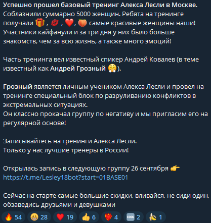
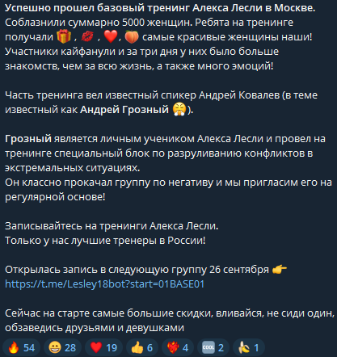

Почему доверяют
- Когнитивные эвристики: простые истории и ясные тезисы повышают согласие.
- Экспертность: воспринимаются как эксперты благодаря уверенности и авторитетности.
- Социальное доказательство: количество лайков, комментариев и т.д. как сигнал качества и надежности.
Статистика
- 61% доверяют инфлюэнсерам больше, чем рекламе. Источник: GlobalWebIndex
- 92% выбирают советы блогеров вместо объявлений. Источник: Influencer Marketing Hub
- 94% Gen Z доверяют блогерам. Источник: Statista
Рынок инфлюэнсеров, 2019–2025

Экспоненциальный рост рынка с 6.5 млрд USD в 2019 году до прогнозируемых 33 млрд USD в 2025 году, с CAGR около 30–35%. Рост на 35.63% в 2024–2025 году опережает традиционную рекламу. Источник: Statista


 
